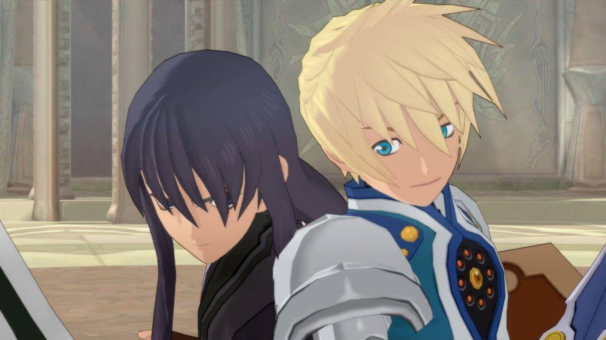
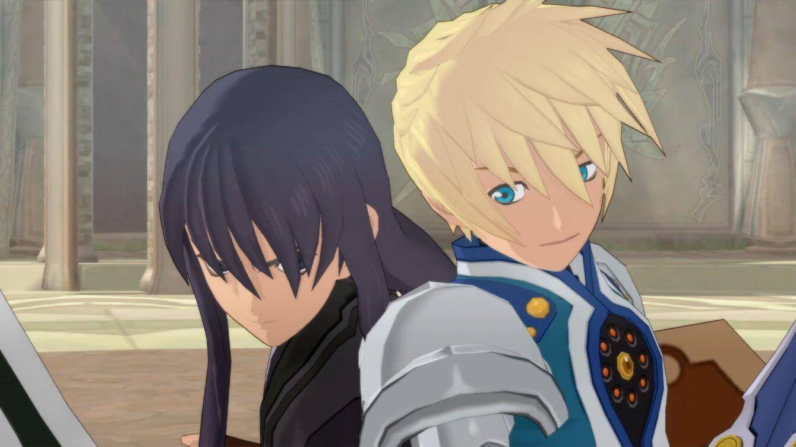

Bienvenidos a Tales of Vesperia
Creada para la celebración de su décimo aniversario, Tales of Vesperia: Definitive Edition trae uno de los JRPGs más adorados de todas las consolas modernas.
Tales of Vesperia, una de las entregas más populares de la serie 'Tales of' vuelve con una resolución de pantalla mejorada y personajes, eventos y trajes que no habían aparecido nunca fuera de Japón.
Comienza una lucha de poder en una civilización que depende de una antigua tecnología,'Blastia' , y el imperio que la controla. El destino de dos amigos que recorren caminos separados se entrelaza en una aventura épica que amenaza la existencia de todos.
- Fecha de lanzamiento: 11/01/2019
- Géneros: Rol
- Desarrollador: BANDAI NAMCO Studios Inc.
- Plataformas: Xbox One, PlayStation 4, Nintendo Switch y PC


- El regreso de un Gigante -
Una querida historia que regresa
La historia de un joven héroe en busca de justicia que cautivó a los fans de 'Tales of' vuelve a Xbox One, PlayStation 4, Nintendo Switch y PC. Vuelve al fantástico mundo de Terca Lumireis, que ahora luce como nunca antes, gracias a una resolución nativa mejorada.
Sumérgete una vez más en las intrincadas conspiraciones y emocionantes aventuras que esperan en cada esquina de Terca Lumireis. Desde los bulliciosos mercados de las ciudades hasta las vastas y misteriosas tierras salvajes, cada rincón de este mundo vibrante está lleno de personajes fascinantes y desafíos emocionantes. ¡Prepárate para explorar nuevos secretos ocultos y descubrir la verdad detrás de antiguos misterios mientras te embarcas en esta épica aventura renovada!
Todo en una misma edición
¡Sumérgete en la Definitive Edition de Tales of Vesperia con sus gráficos actualizados, una increíble banda sonora, emocionantes minijuegos, jefes y todo un guardarropa nunca antes publicado!
Experimenta la magia de este clásico atemporal como nunca antes, con una cantidad de contenido adicional que te sumergirá aún más en el vibrante mundo de Tales of Vesperia. Desde desafíos emocionantes hasta opciones de personalización sin precedentes, esta edición definitiva está lista para llevarte en un viaje inolvidable lleno de aventuras y sorpresas. ¡No te pierdas la oportunidad de vivir esta experiencia única que seguramente te dejará sin aliento!
El grupo se refuerza
Yuri emprende su aventura con Estelle, una joven noble, Karol, un chico en busca de un gremio en el que integrarse, Rita, una erudita excéntrica, Raven, un relajado arquero, Judith, una misteriosa dragona, y Repede, un perro que fuma en pipa... Y, además, se incluyen dos nuevos personajes jugables: Flynn Scifo, el rival y mejor amigo del personaje principal, y Patty Fleur, una joven pirata que busca recuperar sus recuerdos perdidos.
Con un elenco tan diverso y lleno de personalidades únicas, Tales of Vesperia ofrece una experiencia de juego inolvidable, donde cada personaje tiene su propia historia que contar y su papel vital que desempeñar en la aventura. Prepárate para explorar el mundo de Terca Lumireis junto a estos valientes compañeros y descubre los secretos que aguardan en cada rincón de este emocionante universo de fantasía.
Lucha con estilo
¡Reúne a tu equipo favorito y disfruta de emocionantes combates en tiempo real con sus habilidades y Artes Místicas! Tales of Vesperia: Definitive Edition cuenta con una versión especial del LMBS (sistema de combate dinámico lineal, por sus siglas en inglés) que ya es un emblema en la franquicia 'Tales of'. Los jugadores controlarán a un miembro del grupo en tiempo real, mientras que los otros tres estarán controlados por la IA y harán exactamente lo que se le haya indicado a través de una serie de órdenes personalizadas.
Durante los combates, los jugadores podrán cambiar entre los cuatro personajes en cualquier momento, así como emplear ataques físicos, lanzar artes o incluso recurrir a poderosas artes místicas.
¡Une fuerzas con tus amigos!
Utilizando el sistema de co-op local , también puedes optar por sumar hasta 3 jugadores más, cada uno controlando uno de los 9 personajes disponibles. ¡Redescubre esta emocionante historia con amigos o familia!
Además, con la opción de jugar en modo cooperativo , la experiencia se vuelve aún más vibrante y divertida. Reúnete con tus amigos para explorar juntos el mundo de Tales of Vesperia, enfrentar desafiantes batallas y descubrir nuevos secretos y tesoros escondidos en cada rincón del juego.
- Personajes Principales -
Personaje Principal: Yuri Lowell
Interpretado por: Kosuke Toriumi (JP) / Troy Baker/Grant George (EN)
El personaje principal del juego, un joven que vive en los barrios bajos de la capital, Zaphias, y ayuda a los necesitados. Es muy sarcástico y cínico pero tiene una buena formación. Al igual que su amigo de la infancia Flynn, una vez fue un caballero, lo que le dio la libertad de hacer viajes cortos fuera de su ciudad natal, pero se retiró debido a su aversión al gobierno. Ahora trabaja como guardaespaldas. Envidioso de Flynn, decide irse de la ciudad por su cuenta. Después de los hechos que lo llevaron a ser encarcelado, conoce a la princesa Estelle y parten juntos para descubrir el mundo más allá de la capital, Zaphias.
Personaje Principal: Estellise Sidos Heurassein
Interpretado por: Kosuke Toriumi (JP) / Troy Baker/Grant George (EN)
Si bien nombre real es Estellise, Yuri la apoda "Estelle", nombre que adopta por el resto de la aventura. Permaneció encerrada durante mucho tiempo en su castillo de Zaphias donde aprendió a luchar con espada. Queriendo explorar el mundo, aprovecha la oportunidad y se va con Yuri fuera de la capital. Está muy sorprendida de lo que descubre sobre el mundo y le gusta aprender leyendo libros.
Personaje Principal: Flynn Scifo
Interpretado por: Kosuke Toriumi (JP) / Troy Baker/Grant George (EN)
Un caballero que lucha con espada y escudo. Compartió su infancia con Yuri aunque estuvieron muy contrastados, tanto física como éticamente. Tiene los mismos ideales de ayudar a los demás, pero antepone los intereses del gobierno. Como caballero, viaja regularmente para matar monstruos.
Personaje Principal: Repede
Interpretado por: Kosuke Toriumi (JP) / Troy Baker/Grant George (EN)
Si, es un perro. Si, tiene una pipa. Si eso no los convence de probar este juego, nada lo hará. Es muy amigable con los que acepta, pero odia cuando alguien que no conoce intenta tocarlo.
Personaje Principal: Rita Mordio
Interpretado por: Kosuke Toriumi (JP) / Troy Baker/Grant George (EN)
Una investigadora de Aspio que estudia Blastia y odia que la interrumpan durante su investigación. Es una persona solitaria a la que no le gusta entablar relaciones con nadie. Karol la fastidia y no duda en ponerla en su lugar cuando tiene la oportunidad.
Personaje Principal: Karol Capel
Interpretado por: Kosuke Toriumi (JP) / Troy Baker/Grant George (EN)
Es un niño pequeño que dice ser parte del gremio "Les Lames Chasseresses". Ciertas circunstancias lo harán unirse al grupo de Yuri. A pesar de su buen humor, es bastante tímido y carece de confianza en sí mismo.
Personaje Principal: Judith
Interpretado por: Kosuke Toriumi (JP) / Troy Baker/Grant George (EN)
Judith es una mujer joven y bonita de la tribu Krytian Moviéndose sobre la espalda de un dragón llamado Ba'Ul. A pesar de unirse al grupo, Judith tiene una misision secreta y no dejará que nada le impida cumplirla
Personaje Principal: Raven
Interpretado por: Kosuke Toriumi (JP) / Troy Baker/Grant George (EN)
Un hombre misterioso al que le gustan las cosas sencillas. Conoce a Yuri al comienzo del juego mientras están en la cárcel. Tiende a molestar al grupo con sus bromas, pero sabe cómo ponerse serio cuando es necesario. Sin embargo, sufre de un pasado del que no quiere hablar.
Personaje Principal: Patty Fleur
Interpretado por: Kosuke Toriumi (JP) / Troy Baker/Grant George (EN)
Una joven pirata que viaja por el mundo en busca del romance y el legendario tesoro del famoso pirata Aifread. A pesar de su apariencia, tiene una personalidad y forma de expresarse más acordes a las de un anciano.
- Un Vistaso al Juego -
 



Sorteo Gratis - Espada del Rey Arturo
Participa Cargando tus datos y nos comunicaremos a la brevedad !